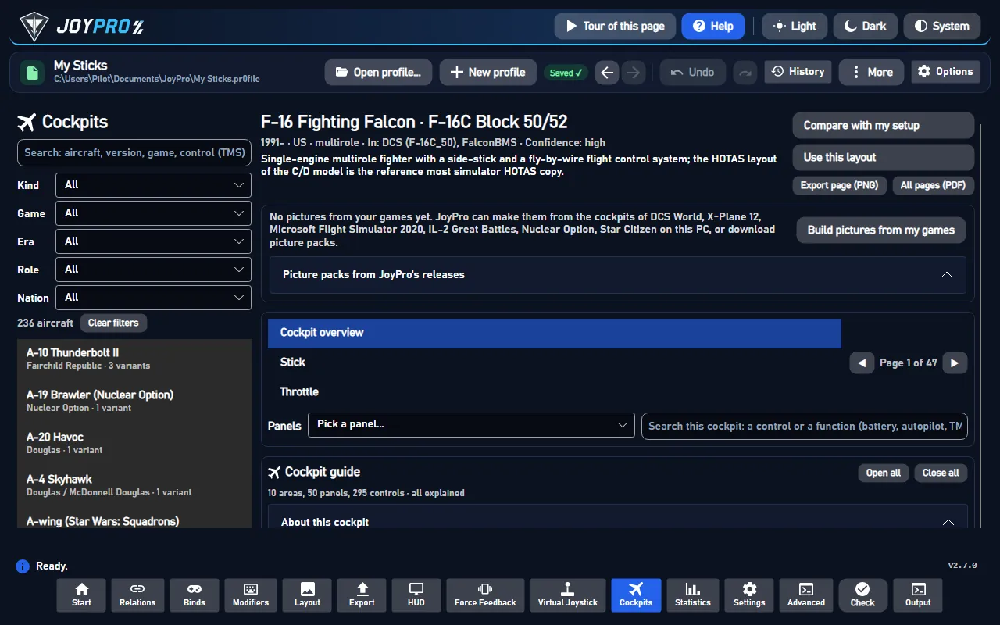

#Effacer les filtres
BoutonrédigéVide le champ de recherche et remet Type, Jeu, Époque, Rôle et Nation sur « Tous » : toute la liste des appareils s'affiche de nouveau.
La page Cockpits est une référence de cockpits réels et fictifs, présentée comme le chapitre cockpit d'un manuel de vol : choisissez un appareil, sa version et son siège, et lisez la vue d'ensemble, une page par poignée (manche, manette des gaz, cyclique, collectif) avec le tableau HOTAS, et une page par panneau. Elle ne change rien dans votre profil ni dans vos jeux ; elle vous aide à décider quelle fonction va sur quel bouton, et Utiliser cette disposition ouvre l'assistant de configuration avec la disposition du manche et de la manette des gaz d'un appareil.


Un dessin de la poignée avec des repères numérotés et le tableau HOTAS : une ligne par commande et par direction (appui, appui long, maintien), une colonne par mode (NAV, A-A, A-G ; ou TGP, HUD). C'est ainsi que l'appareil réel utilise chaque bouton, un bon modèle pour vos propres assignations.


Quand vos jeux installés ont l'appareil, Créer les images à partir de mes jeux dessine le cockpit du jeu avec chaque commande cliquable numérotée et nommée comme le jeu la nomme. Pour les appareils que vous n'avez pas, JoyPro propose des packs d'images à télécharger, et pour les cockpits qu'aucun jeu n'a, des photos vérifiées avec les étiquettes de JoyPro par-dessus.
Rien n'est écrit dans un jeu. Comparer avec ma config marque dans les tableaux HOTAS les fonctions que votre profil ouvert assigne déjà pour ce jeu et cet appareil, vous voyez donc d'un coup d'œil ce qui manque encore.
Documents\JoyPro2\Cockpits ; Ouvrir le dossier l'ouvre.Quand vous ouvrez une variante, JoyPro montre la première de ces sources qui existe :
Zone (console gauche, panneau principal, panneau supérieur) > panneau (« ENG & JET START control panel ») > commande (chaque interrupteur, bouton et molette avec ses positions). Un clic sur une commande ouvre la page qui la montre et entoure sa légende ; un clic sur une légende la sélectionne dans le guide. Tout ouvrir / Tout fermer ouvrent ou ferment toutes les zones.
CockpitsViewModel.cs (sélecteur, filtres, comparer, utiliser la disposition), CockpitsViewModel.Pages.cs (pages du manuel, exportation), CockpitsViewModel.Guide.cs, CockpitsViewModel.Pictures.cs, CockpitsViewModel.PicturePacks.cs, CockpitsViewModel.VerifiedPhotos.cs ; la vue de page ManualPageView.DB\Cockpits\*.json (appareils, variantes, commandes, panneaux), DB\Cockpits\drawings, line-drawings, guide, photo-labels (un fichier par photo vérifiée).<data>\GameData\CockpitPictures\<game>\<aircraft> (pictures.json, index.json), photos vérifiées dans <data>\CockpitPhotos\<aircraft>, photos liées dans le cache de téléchargement ; les réponses sur les photos avec les réponses sur les photos de périphériques (cockpit:<aircraft>).engine cockpits (list, search, get --json pour Utiliser cette disposition, compare pour Comparer avec ma config, render pour PNG/PDF, pictures build|status|check, photos). Référence : cockpits, privacy.La documentation des fonctions derrière cette page, générée à partir du dépôt :
26 contrôles, lus dans le code source du programme : 26 rédigés, 0 avec les faits tirés du code source (info-bulle, commentaire de code, appel au moteur), 0 encore à développer.
Vide le champ de recherche et remet Type, Jeu, Époque, Rôle et Nation sur « Tous » : toute la liste des appareils s'affiche de nouveau.
Info-bulle Marque chaque fonction pour laquelle votre profil ouvert a une relation (dans les jeux et appareils de cette variante)
Compare votre profil ouvert avec cette variante : chaque fonction des tableaux HOTAS que l'une de vos relations contient pour ses jeux et appareils reçoit un ✓ avec la relation et l'entrée, et une ligne indique combien de fonctions sont couvertes.
Lecture seule ; nécessite un profil ouvert.
Info-bulle Transmet la disposition du manche et de la manette des gaz de cet appareil à l'assistant de configuration (engine cockpits get ... --json)
Ouvre l'assistant de configuration avec cette variante : son appareil passe en tête de la liste des priorités et le plan place ses fonctions comme sur le manche et la manette des gaz de cette variante, au lieu de la première variante de l'appareil.
Un assistant resté ouvert avant Appliquer la reprend aussi.
Info-bulle Cette page sous forme d'image dans votre style de dessin (Paramètres > Dessins)
Enregistre la page affichée en PNG dans votre style de dessin, dans Documents\JoyPro2\Cockpits, nommée d'après l'appareil, la variante et la page ; un fichier du même nom est remplacé.
Ouvrir le dossier l'ouvre.
Info-bulle Toutes les pages de cette variante dans un seul PDF
Enregistre toutes les pages de cette variante dans un seul PDF dans votre style de dessin, dans Documents\JoyPro2\Cockpits.
Ouvrir le dossier l'ouvre.
Info-bulle Génère les cockpits de vos jeux installés ({0}) avec chaque commande cliquable numérotée et nommée comme le jeu la nomme. Créé sur ce PC, conservé avec les données de vos jeux.
Crée sur ce PC des images des cockpits de vos jeux installés, chaque commande cliquable numérotée et nommée comme le jeu la nomme.
Cela prend quelques minutes par jeu ; les images sont conservées avec les données de vos jeux, jamais dans un dossier de jeu, et les pages du manuel les utilisent.
Info-bulle Télécharge les images de cockpit que JoyPro a créées à partir du jeu (un fichier de version sur GitHub), les vérifie et les conserve avec les données de vos jeux
Télécharge le pack d'images proposé depuis les versions de JoyPro, avec une barre de progression.
Chaque pack est vérifié avec sa somme de contrôle et décompressé dans les données de votre jeu ; les pages du manuel de ces appareils montrent alors les images du jeu.
Ferme l'offre sans télécharger ; JoyPro ne propose plus ces packs pendant cette session.
Arrête le téléchargement de pack d'images en cours.
Un pack incomplet n'est pas installé ; les packs déjà terminés restent.
Info-bulle Les packs de chaque appareil de vos jeux installés que JoyPro connaît ; vous voyez d'abord la taille totale
Recherche les packs d'images de chaque appareil de vos jeux installés que JoyPro connaît et propose ceux qui ne sont pas encore sur ce PC avec leur taille totale ; Télécharger lance le téléchargement.
Télécharge tous les packs d'images de ce jeu depuis les versions de JoyPro.
Chaque pack est vérifié avec sa somme de contrôle et décompressé dans les données de votre jeu ; les pages du manuel de ces appareils montrent alors les images du jeu.
Info-bulle Télécharge chaque photo de ce cockpit depuis son adresse d'origine (ou la copie de l'archive web), la vérifie selon l'enregistrement de JoyPro et la garde sur ce PC
Télécharge chaque photo vérifiée de ce cockpit depuis son adresse d'origine, vérifie chacune avec la référence de JoyPro et la conserve sur ce PC.
Le clic compte aussi comme votre oui aux photos de cet appareil ; le manuel a alors une page par photo avec les étiquettes numérotées de JoyPro.
Arrête le téléchargement des photos vérifiées de ce cockpit.
Les photos déjà téléchargées et vérifiées restent sur ce PC.
Ouvre dans l'Explorateur le dossier où sont allés les exports PNG et PDF, en le créant si nécessaire.
Masque les marques de Comparer avec ma config : les tableaux HOTAS et le guide montrent de nouveau le cockpit sans vos assignations.
Info-bulle Page précédente
Va à la page précédente du manuel.
Info-bulle Page suivante
Va à la page suivante du manuel.
Info-bulle Ouvre chaque zone et chaque panneau
Ouvre chaque zone et chaque panneau du guide du cockpit, pour que chaque commande soit listée.
Info-bulle Affiche uniquement les zones
Ferme toutes les zones du guide du cockpit : seules les zones sont listées ; ouvrez-en une pour voir ses panneaux.
Ouvre ou ferme cette zone ou ce panneau du guide du cockpit.
Pendant qu'une recherche filtre le guide, le clic efface le filtre.
Ouvre ou ferme l'explication de cette commande dans le guide du cockpit : ce qu'elle fait en mots simples, « Vue d'ensemble », ses positions, le nom que lui donne le jeu et les commandes pour l'assigner.
Répond à la question sur les photos de cet appareil : Oui charge maintenant ses liens de photos, Non ne le fait pas, Toujours pour les cockpits charge les photos de tous les appareils sans demander, Jamais arrête toutes les photos de cockpit.
Après un Non, Afficher les photos de cet appareil vaut un Oui.
Charge à nouveau cette photo après un échec de chargement.
Info-bulle Ouvre la photo elle-même dans votre navigateur (en taille réelle, pour l'enregistrer depuis là)
Ouvre la photo elle-même en taille réelle dans votre navigateur, pour la regarder ou l'enregistrer depuis là.
Ouvre dans votre navigateur la page sur laquelle la photo est publiée.
Ouvre cette source dans votre navigateur ; l'adresse est dans l'info-bulle.